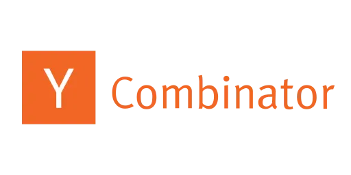
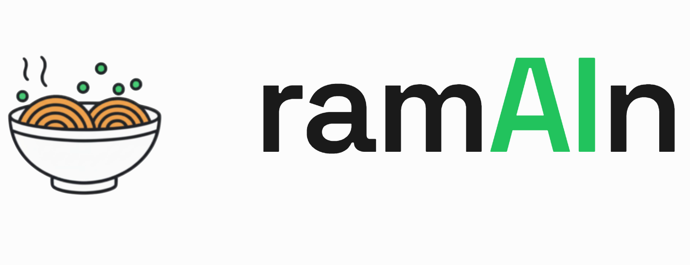

Startup & Entrepreneurship

Y Combinator W26
Nov 2025
$500K Funding
Accepted into
Y Combinator
Winter 2026 batch.
Building

ramAIn
— building super fast computer use agents.
Research & Academic Scholarships
CSE Research Accelerator Fund
2025
₹2,50,000 INR
Awarded Conference Grant/Scholarship for attending
ICLR 2025
in Singapore. This prestigious fund supports outstanding student research and conference participation,
enabling presentation of our paper "Bonsai: Gradient-free Graph Distillation for Node Classification."
Danish Data Science Academy Scholarship
2024
15,000 DKK (₹1,80,000 INR)
Awarded prestigious research visit grant by
DDSA
,
funded by Novo Nordisk and VILLIUM DEVELOPERS. This scholarship supported my research collaboration
at the
University of Copenhagen
on
high-dimensional nearest neighbor search algorithms.
Industry Competitions & Hackathons
Lam Research Challenge 2024
National Champions
₹5,00,000 INR
Achieved
First Position
in 5-axis Robotic arm design competition.
Led team "Pi Propulsion" through three intensive rounds among 2,500 students from 153 universities across India.
Final challenge involved designing and building a 4-axis robotic arm for semiconductor wafer handling at
IISc Bangalore
.
Team: Vansh Ramani, Reeshabh Kotecha,
Dhruv Joshi
, Nakshat Pandey
Citadel Securities Quants Arena
2024
First Position
Secured
First Position
in the Data Challenge created by
Dr. Giovanni Carù
.
Solved complex problems involving probability theory, linear systems, and quantum mechanics. Developed
innovative algorithms for reconstructing global probability distributions and Bell's Theorem applications.
Technical Focus: Non-Negative Linear Systems, CHSH Inequality, Quantum State Measurement
Goldman Sachs India Hackathon
2024
Rank 4/8,000
Achieved
All India Rank 4
among 8,000 participants from India's
premier institutions. Advanced to finals at
Goldman Sachs
Bengaluru office after ranking 5th in preliminaries. Tackled challenging problems in SQL query engines,
graph theory, and OMR sheet processing.
Technical Challenges: AST-based SQL engines, Chinese Postman Problem, Modified Catalan Numbers
Eightfold AI Hackathon
2024
Judge & Problem Curator
Curated problem statement and served as judge for INNOV8 2.0 hackathon with a prize pool of
₹4,25,000 INR
. Contributed to designing challenging problems
in AI/ML domain and evaluated innovative solutions from participants across multiple universities.
Deepfake Detection CodeWar
BECon 2024, IIT Delhi
₹50,000 INR
Won
First Position
with innovative ensemble learning approach
achieving 93% accuracy. Developed multimodal system combining MTCNN-EfficientNet frame classification
with audio-visual fact-checking mechanism.
Collaborator:
Dhruv Joshi
Academic Excellence
IIT Delhi Merit Award
2024
₹2,500 INR
Awarded Merit Prize and Certificate for ranking among
top 7%
in the institute based on academic performance. This recognition is given to students who demonstrate
exceptional academic excellence across all subjects.
JEE Advanced 2023
Engineering Entrance
Top 0.5%
Ranked among
Top 0.5%
of 1.2 million candidates in India's
most prestigious engineering entrance examination. This achievement secured admission to the Indian
Institute of Technology Delhi, one of India's premier technical institutions.
JEE Mains 2023
National Level Examination
Top 1%
Achieved rank in
Top 1%
of 1.2 million candidates in
national-level engineering entrance examination. This performance qualified for JEE Advanced and
demonstrated strong foundation in mathematics, physics, and chemistry.
UGEE 2023
IIIT Hyderabad Entrance
AIR 153
Secured
All India Rank 153
in IIIT-Hyderabad undergraduate
engineering entrance examination (UGEE). This competitive examination tests aptitude in computer science
and mathematics for admission to specialized CS programs.
Swaraj India Public School
2023
Gold Medal
Awarded
Gold Medal of Excellence
for achieving
Class Rank 1
among 500 students. Maintained consistent
academic excellence throughout higher secondary education with CGPA of 9.65/10.
Problem Solving & Programming
Digital Enigma @ TRYST
IIT Delhi
₹5,000 INR
Awarded
2nd Position
in computer science problem solving
competition at IIT Delhi's annual technical festival. Demonstrated exceptional algorithmic thinking
and programming skills in competitive programming environment.
Professional Recognition
American Chemical Society Speaker
2024
Invited Speaker
Honored to be invited as speaker at the
American Chemical Society
and BioPractify's 38th Students Journal Club and Networking Program. Presented on "Undergrad Research:
Navigating AI for Applied Sciences" focusing on Graph Neural Networks applications in drug discovery
and molecular modeling.
Topics: GNN applications, Sustainable AI practices, Computational chemistry
Research Paper Publications
2024-2025
Peer-Reviewed
ICLR 2025:
"Bonsai: Gradient-free Graph Distillation for Node Classification" -
Top-tier ML conference publication
ACS JCTC 2024:
"Graph Neural Networks for Predicting Solubility in Diverse Solvents
Using MolMerger" - Leading computational chemistry journal
Impact: Advancing state-of-the-art in graph neural networks and molecular property prediction
International Experience
Carnegie Mellon University
Research Internship
Summer 2024
University of Copenhagen
Research Visit
Summer 2024
ICLR 2025 Singapore
Conference Presentation
April 2025
Presented research paper at
ICLR 2025
in Singapore,
one of the world's most prestigious machine learning conferences. Engaged with leading researchers
including
Prof. Michael Bronstein
,
sharing insights on graph neural networks and receiving valuable feedback from the global AI community.